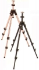

器材库 > 脚架 > 055C

详细规格
发布日期
未知
产品类型
三脚架
节数
3
最大管径
30mm
最小管径
20mm
折合高度
670mm
最高工作高度
1760mm
最低工作高度
260mm
最大负重
6kg
自重
2.65kg
maomao12345552007-12-26 03:264.92 分
操作性 4.50功能性 5.00美观性 5.00趣味性 5.00耐用性 5.00性价比 5.00
莽原2006-03-07 17:373.92 分
操作性 4.50功能性 4.00美观性 4.00趣味性 3.00耐用性 5.00性价比 3.00
cnbc2005-04-04 18:074.42 分
操作性 4.00功能性 4.00美观性 4.50趣味性 4.00耐用性 5.00性价比 5.00
qzho2002-09-08 09:504.67 分
操作性 4.50功能性 5.00美观性 5.00趣味性 4.00耐用性 5.00性价比 4.50
鱼八2002-04-15 18:474.25 分
操作性 4.50功能性 4.50美观性 4.50趣味性 4.00耐用性 4.50性价比 3.50
产品图 / 样片
曼富图 055C
评测 / 相关文章
该产品暂无存档的评测文章